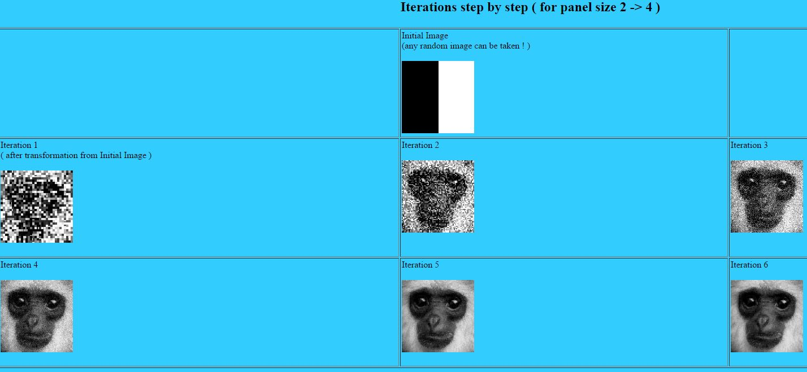

We are going to create a parallelized implementation of fractal image compression. Because of the relatively fast speed of decoding, we will focus on a CUDA-based encoding implementation only.
Fractal Image Compression had its heyday in the early 90s (even being chosen as the image compression algorithm for all images in Microsoft’s Encarta Encyclopedia [link]) but it was never able to eclipse JPEG. Its main disadvantage compared to JPEG compression is high computation time for compression, which is what we would like to address for this project.
The key insight behind fractal image compression is that self similarity exists in many images, and that this self similarity can be exploited to compress an image. Specifically, fractal image compression looks to find affine transformations from chunks of an image, called domain blocks, to every smaller chunk of the image, called range blocks (which partition the image).These transformations form an iterated function system (IFS) on the image, and if the transformations are chosen correctly, this IFS will converge to the original image for any input. The compressed image, then, is just a file representing the IFS.
The Collage Theorem describes how we can find the appropriate affine transformations to make up our IFS. In layman’s terms, this theorem says that the best way to find the desired affine transformation for a range block is to find the transformation-domain block pair whose result is most similar to the range block. Finding this mapping for every range block defines the IFS, and thus the compressed image.
Decoding the image, which we will not be focusing on for this project, simply involves iterating the IFS on any input image until it converges. The image it converges to will be the original image before compression (with some loss).
We believe the image encoding can be heavily parallelized. The first step of the encoding is to create a codebook, or set of transformed domain blocks. This can be as simple as partitioning the image into squares, and computing each of the 8 affine transformations possible for that square (rotations of 0, 90, 180, and 270 degrees on the normal and mirrored versions of the block). All of these transformations can be computed in parallel.
Next, the best element of the codebook must be computed for each range block. This involves comparing each range block to each domain block using some distance metric, and choosing the codebook element that minimizes this distance (Collage Theorem). This, again can be parallelized -- at least across range blocks, and possibly across range block-codebook element pairs (to compute distances) with a final min function on the distances for each range block.
A further improvement to the project could involve adding support for color images, which naively could be looked at as compressing each channel as a greyscale image (which could be done in parallel, as well). Additionally, we could investigate methods for pruning the codebook, so as to decrease the number of possible transformations to be considered for each range block. This could also present an opportunity for parallelization.
While most of the base algorithm described has clear parallelism, there are still several unanswered questions. For instance, when computing the codebook, there are several way we could attack the problem. One way is to only parallelize across domain blocks, having a single CUDA thread compute all 8 transformations for the block. Another way is to use a CUDA thread for each block-transformation pair. While this is more parallelized, it also requires half of the transformation threads to redundantly compute the mirror of the block. A final approach could be to still parallelize across blocks and transformations but use shared memory to reduce the redundant calculations.
Other challenges include determining how to parallelize the determination of the best codebook element for each range block. Again, there are multiple possible dimensions to parallelize across, each with their own tradeoffs.
For our project, we plan to start both the sequential and the CUDA implementations from scratch, though we both have some experience with the algorithm from a math class. Additionally, there are several papers about fractal image compression available on the internet.
We plan to use either the GTX 780 GPUs in the GHC clusters, or one of the more powerful GPUs in the latedays cluster for our project.
Goals:
Stretch Goals:
For our demo we plan to show analysis of our CUDA implementation versus the sequential version. This would include speedups for different image, range block, and domain block sizes. Additionally, if the implementation is fast enough, we could compress images taken at the demo, and show the decompression iterations (similar to the monkeys above).
We believe GPUs are the correct platform for our project because many steps of our problem can be broken down into a very large number of independent pieces, which suits GPU architectures well.
Week of April 4th:
Week of April 11th:
Week of April 18th:
Week of April 25th:
Week of May 2nd: